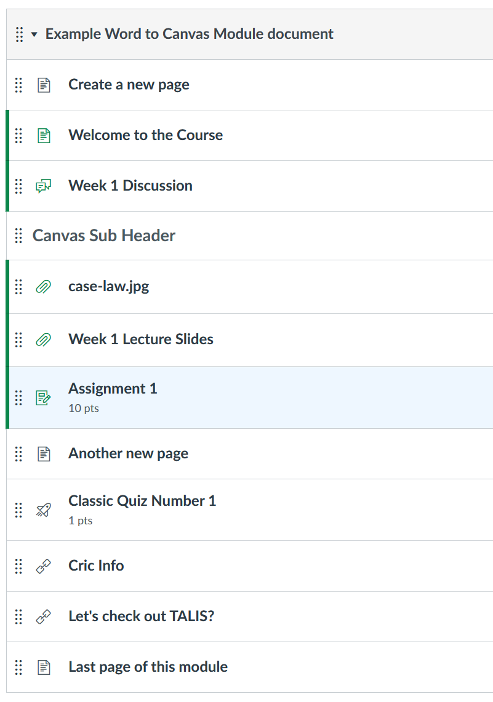

Create a word-2-canvas Word document
A word-2-canvas Word document uses specific Word styles to achieve different types of changes to a Canvas module. The sample w2c.docx includes those styles is an example of how to use them.
For more on Word styles see this resource or search out your own
How it works
Canvas Modules are collections of items of different types. word-2-canvas allows you to write a Canvas module as a single Word document. Your Word document consists of a sequence of different heading styles. Each heading style represents a single Canvas item.
The following illustrate how word-2-canvas converts the sample w2c.docx file into a Canvas module.
| Word document | Canvas module |
|---|---|
 |
 |
Summary: word-2-canvas styles and their purpose
Canvas specific styles
The following Word styles direct word-2-canvas to perform Canvas specific actions. e.g. create a new Canvas module with a title matching text in the Title style.
| word-2-canvas style | Purpose |
|---|---|
Title * |
The title of the new Canvas module |
Heading 1 * |
Name of a new Canvas page |
Existing Canvas Page |
Name of a Canvas page already available in the course |
Canvas Discussion |
Name of an existing Canvas discussion |
Canvas SubHeader |
Name for a new Canvas text (sub) header |
Canvas File |
The name (or part of the name) of a file already in the Canvas course's Files |
Canvas File Link |
Insert a link to a Canvas file within a page. Apply this style to some text and it assumes that the text is the name of the file that it should link to. Apply this style to a link, then it assumes the link is the name of the file. |
Canvas Assignment |
The name (or part of the name) of an assignment already in the Canvas course's Assignments |
Canvas Quiz |
The name (or part of the name) of a quiz already in the Canvas course's Quizzes |
Canvas External Url |
Add an external link as a module item |
Canvas Extternal Tool |
Add an external tool as a module item |
Canvas Image |
Define some HTML that contains an <img tag where the img.src is the name of a file already in the Canvas course's Files area. Will attempt to identify a URL for the file and insert it into the img.src |
Canvas Menu Link |
Create a link where the "address" is the name of an item in the Canvas left hand menu. Will get replaced with the correct URL for the course site |
* - Standard Word styles.
Canvas Quiz only works for Classic Quizzes, not New Quizzes (classic vs. new quizzes](https://it.umn.edu/services-technologies/how-tos/canvas-understand-classic-quizzes-vs-new)) because Canvas does not yet have an API for new Quizzes.
General web specific styles
The following style(s) direct word-2-canvas to perform general web specific actions. e.g. embed into a Canvas item some specific HTML.
| word-2-canvas style | Purpose |
|---|---|
| embed | Identifies text that will be inserted into a Canvas page as HTML. e.g. use it to embed a YouTube video |
Blackboard migration specific styles
The following style(s) directly word-2-canvas to perform actions designed to help migrate content from the Blackboard Learning Management System to Canvas.
| word-2-canvas style | Purpose |
|---|---|
Blackboard image p |
Define HTML that includes an <img tag for an image residing in the content collection of a Blackboard course site. Assuming the image has been migrated to the Canvas course's files area, will create an <img tag in a Canvas page with a URL to the image in Canvas |
Hide |
Define text that should not be imported into the Canvas module. Typically used to provide Blackboard specific references to aid migration |